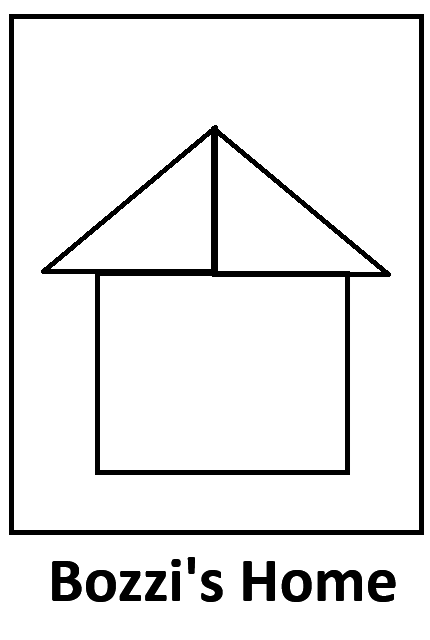
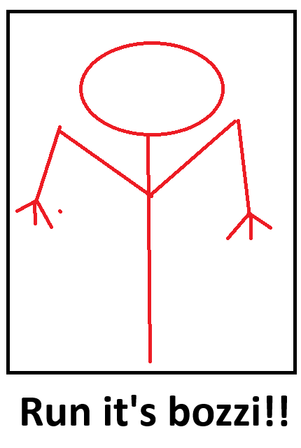
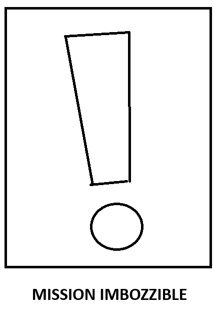

Bozzi cinema è una struttura altamente avanzata per la visione di film
Ecco a voi i miglior film in prima visione

Bozzi's Home
2.04 h
Il film parla di una casa maledetta che apparteneva ad un vecchio chiamato bozzi

Run It's Bozzi!!!
2.34 h
Un gruppo di studenti decide di andare a fare campeggio in un bosco di rivolta d'adda quando di notte appare una misteriosa creatura

Mission Impozzible
3.24 h
L'agente della CIA Francesco Bozzi durante un appuntamento si ritrova all'interno di una sparatoria che si rivelerà essere tutt'altro